Quem Somos
Somos união, expressão e resistência da periferia. A Cia Art Black é um coletivo pulsante de artistas, jornalistas, rappers, produtores, podcasters, fotógrafos e a vibrante equipe de dança Desk Dance, composta por pessoas com deficiência. Juntos, construímos pontes culturais, sociais e humanas para fortalecer os talentos e as vozes da periferia.
Nossa Justificativa
A Cia Art Black nasce da urgência de dar visibilidade às vozes silenciadas da periferia, valorizando talentos historicamente excluídos dos espaços culturais e midiáticos. Diante da exclusão social e da falta de oportunidades, nossa iniciativa é uma ferramenta potente de inclusão e empoderamento.
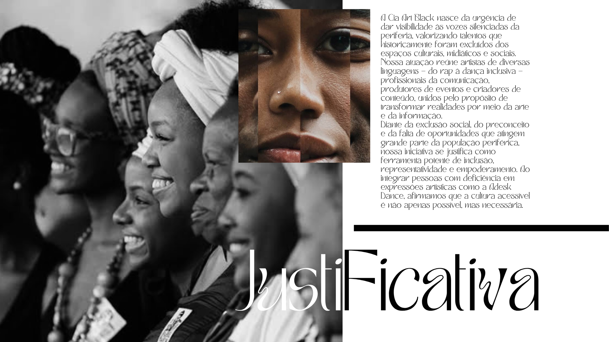Artistas e Parcerias
Conheça alguns dos talentos que fazem parte ou colaboram com a Cia Art Black, como Márcio André Buiú, diretor cultural e CEO da Reis Produções Ltda.
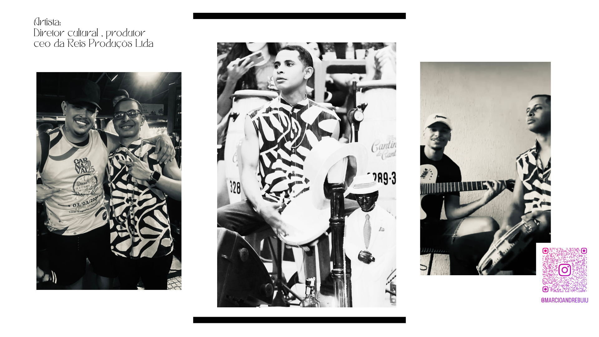Nossa História
Tudo começou com o desejo coletivo de reunir forças: jornalistas, rappers, produtores de eventos, fotógrafos, podcasters e artistas da dança, incluindo a Desk Dance, protagonizada por pessoas com deficiência. Com cada ação, a Cia Art Black fortaleceu suas raízes na cultura urbana e popular.
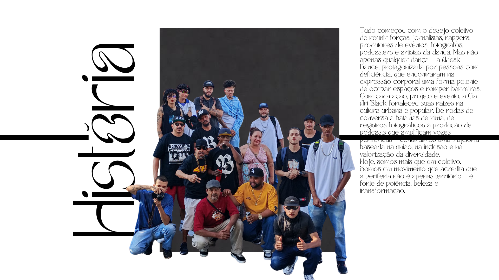Festivais e Eventos
A Cia Art Black participa e organiza diversos eventos, como o 3º Festival de Dança de Aparecida de Goiânia, realizado em 10 de Maio de 2020.
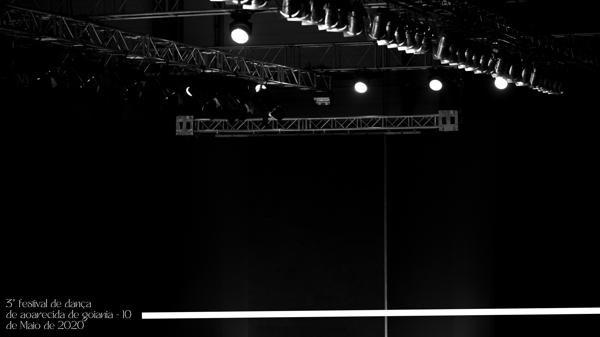Projetos Sociais: Lado Leste Contra o Crime
Um dos projetos da Cia Art Black é "Lado Leste Contra o Crime", datado de 26/06/2025.
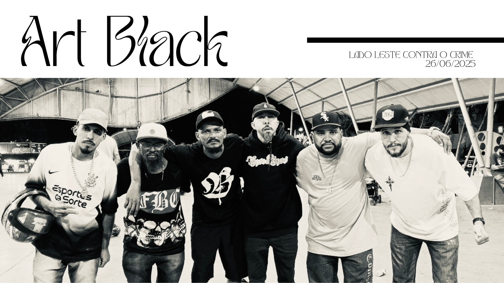Destaque: Ana Maria Alves
Conheça Ana Maria Alves, Agente Cultural, uma das figuras importantes em nosso coletivo.
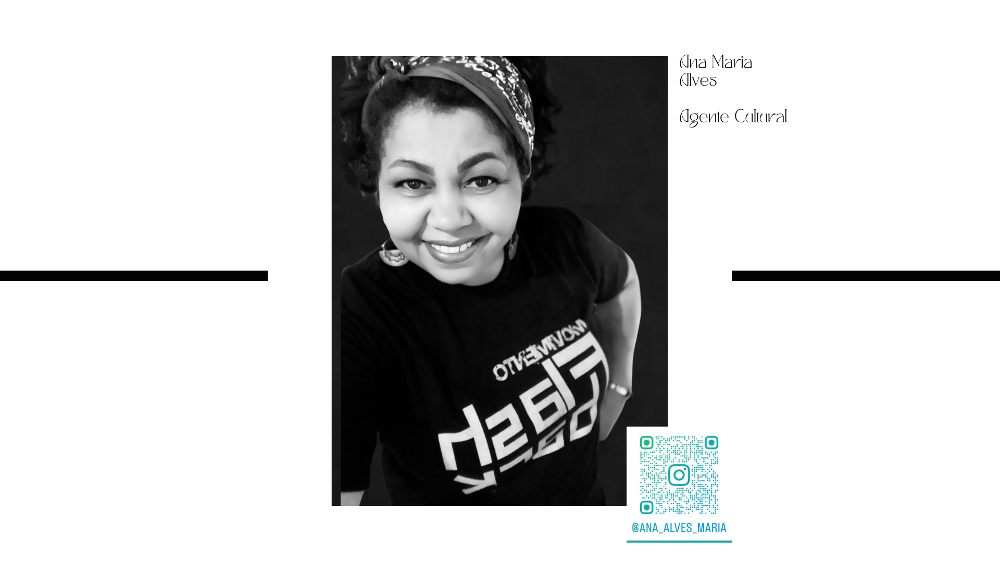Nosso Objetivo
Nosso objetivo é transformar a cultura em ferramenta de resistência e valorização das identidades brasileiras. Cada integrante representa uma linguagem artística diferente, mas todos compartilham o compromisso com a arte como meio de transformação social.
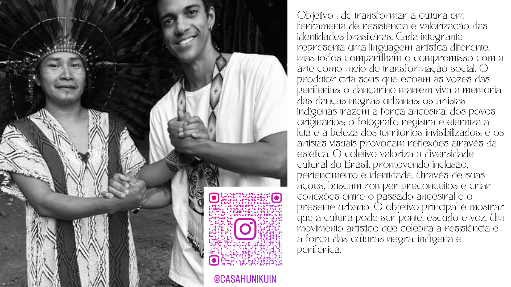ADESC
A ADESC (Associação de Deficientes de Senador Canedo) impulsiona a inclusão e o desenvolvimento na periferia através do esporte (basquete) e da dança. Sua atuação abrange eventos culturais, capacitação e ações de inclusão para jovens, comunidades indígenas e pessoas com deficiência, aproveitando a diversidade de seus membros para criar projetos integrados e gerar novas oportunidades.
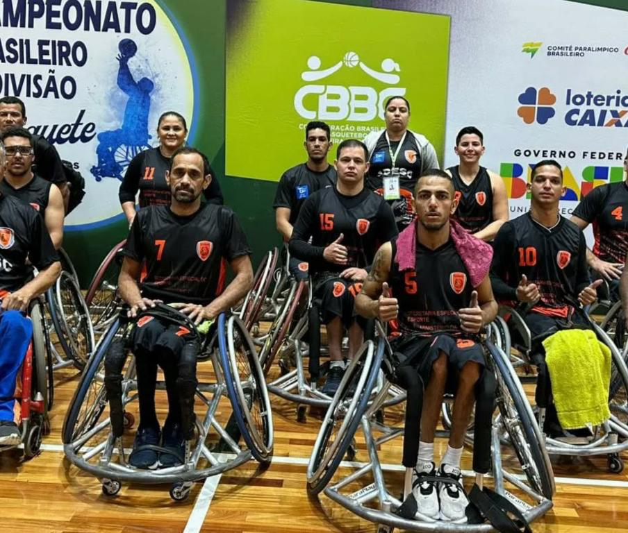Nossas Atividades
A Cia Art Black atua de forma multidisciplinar, promovendo ações culturais que valorizam a periferia e ampliam a inclusão social. Nossas principais atividades incluem: Apresentações de Rap e Música Urbana, Intervenções de Dança com a Desk Dance.
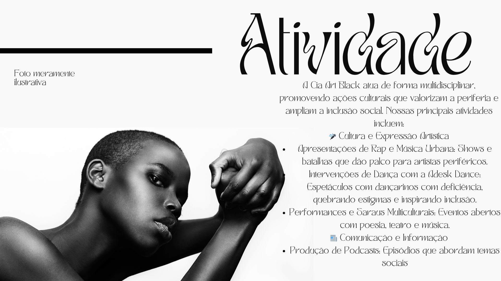Lançamentos e Documentários
Promovemos eventos como "Arte + Hip Hop" e o lançamento do documentário "Lado Leste Contra o Crime", em parceria com MCs, DJs locais e prefeituras.
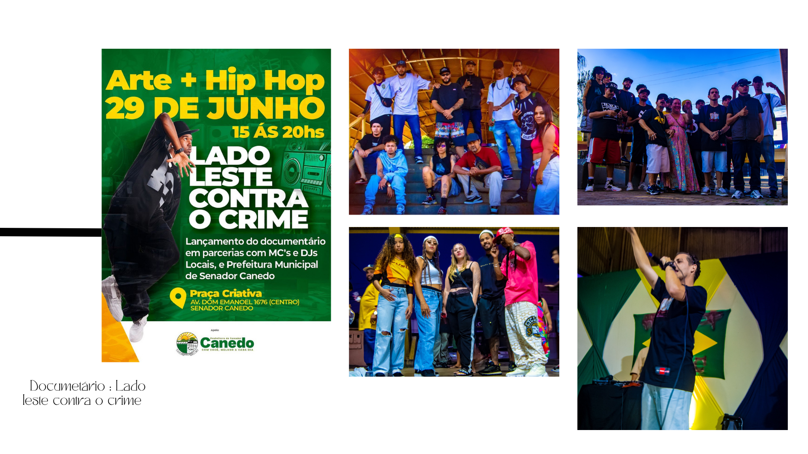Eventos com Propósito Social
Organizamos iniciativas como o "Hip Hop Contra a Fome", que reúne diversos artistas para um causa social.
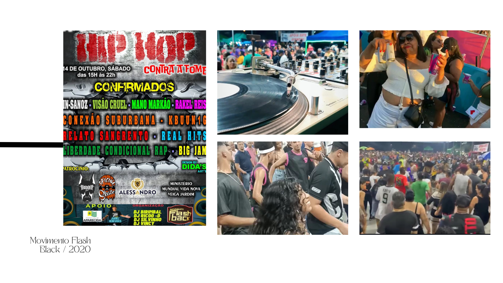Inclusão e Terapia Solidária
A Casa Huni Kuin oferece terapia solidária e é um espaço de apoio. [cite: 124, 125, 128]
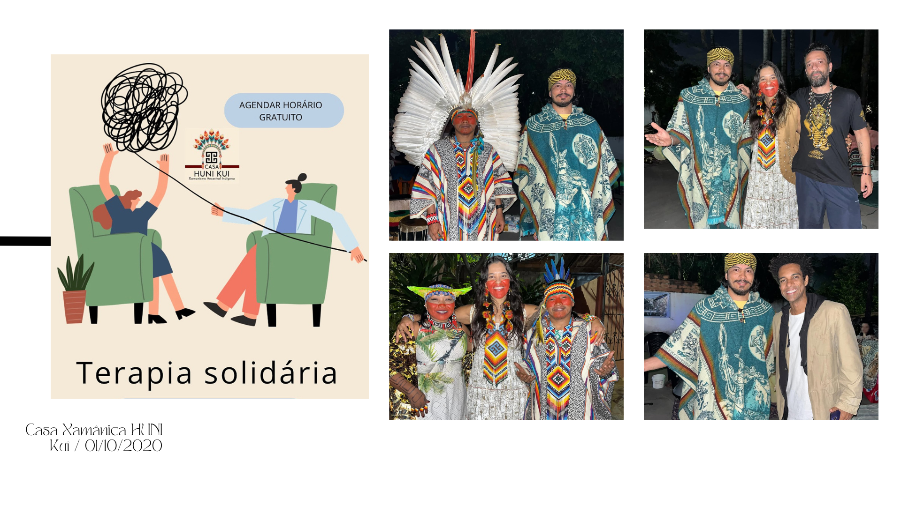Reconhecimentos e Certificados
Ana Maria Alves Fabiano recebeu diversas homenagens, como "Mulher Destaque de Comunidades 2018" e diplomas de Honra ao Mérito.
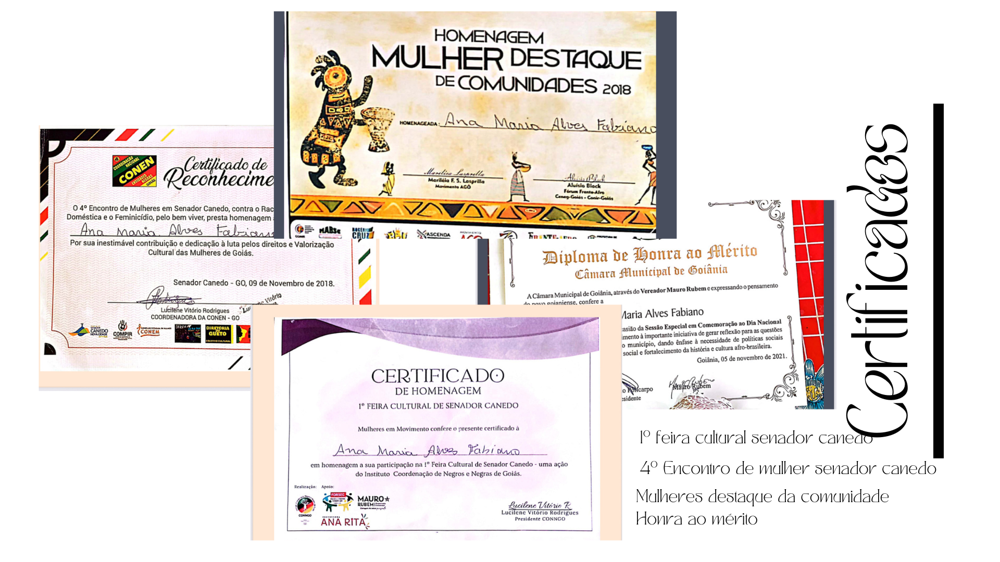Colaborações Musicais
Realizamos parcerias musicais importantes, como com D'Black e Txaná Ybã na música "Haira", disponível no Spotify.
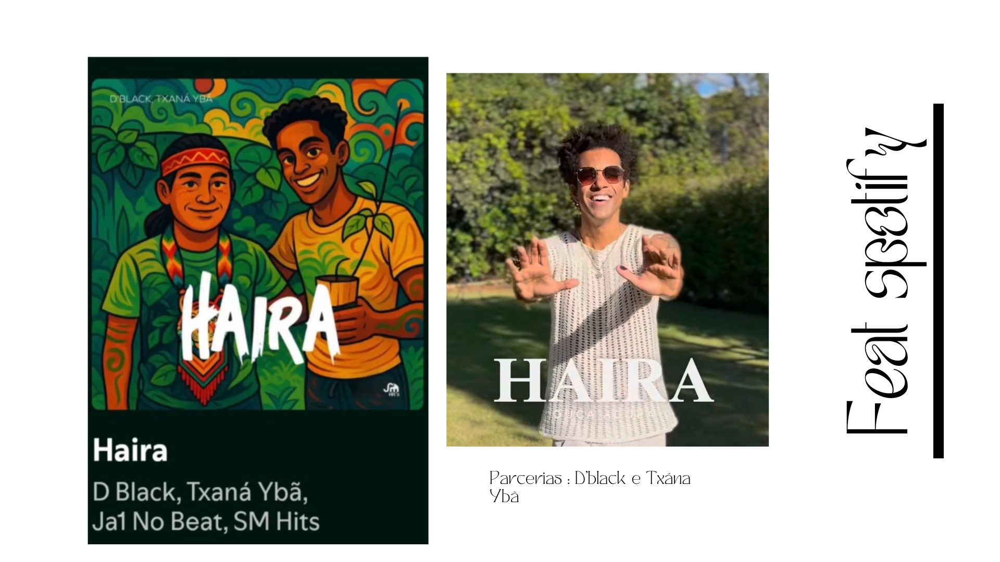Nossas Redes Sociais
Confira nossa atuação e novidades em nossas plataformas sociais.
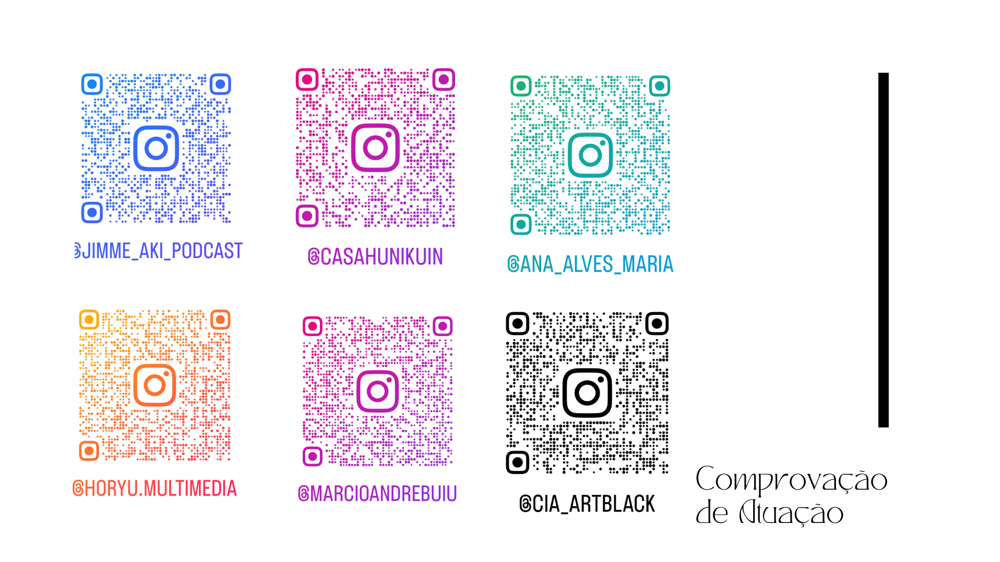